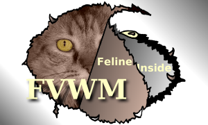
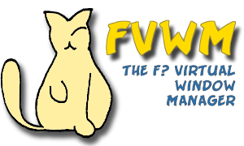
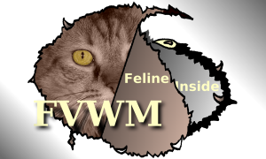
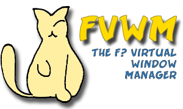

Here's one. That's my own cat back there. She luvs linux, too.



weighing in at 34Kb, a different concept with a clear background. Thanks. Colors on this one are flexible, I may change them around a bit and see what else I can come up with.

|
||||||||
Here's one. That's my own cat back there. She luvs linux, too.


weighing in at 34Kb, a different concept with a clear background. Thanks. Colors on this one are flexible, I may change them around a bit and see what else I can come up with.
